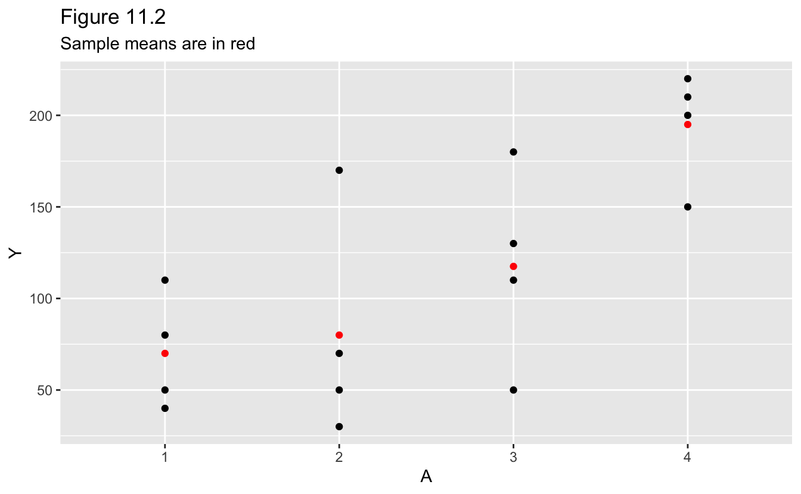
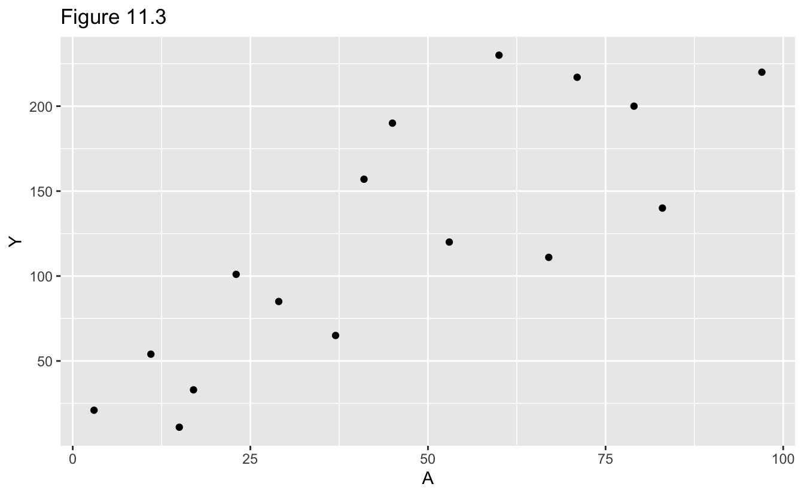
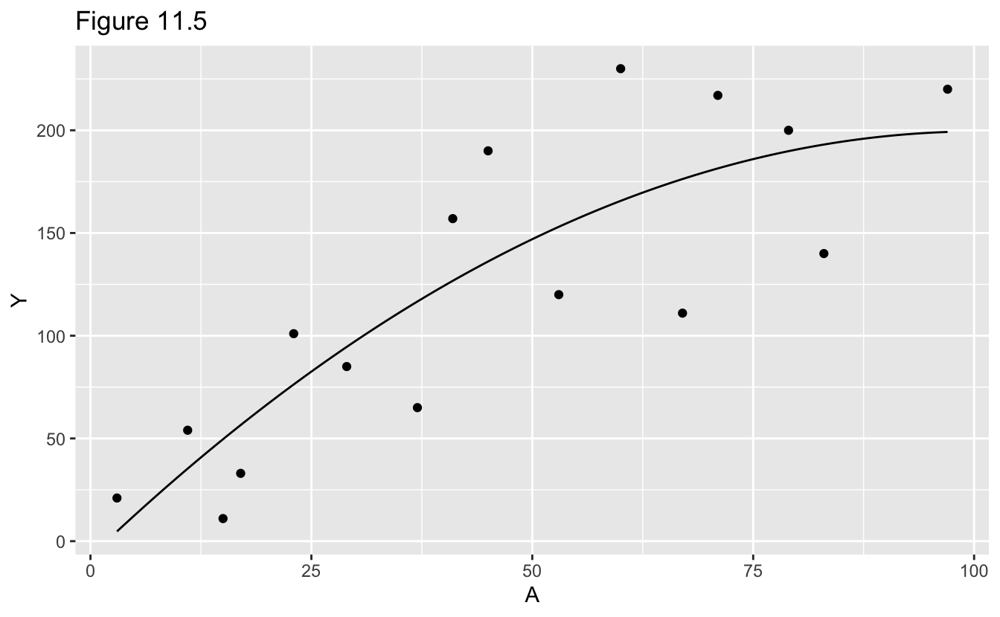

11 Why Model?
# Packages
library(tidyverse)
# Round and format vector
round_format <- function(x, nsmall = 2, ...) {
format(round(x, digits = nsmall), nsmall = nsmall, ...)
}
# Print tibble
kable <- function(x, cols = where(is.double), nsmall = 2, align = "r", ...) {
x %>%
mutate(across({{cols}}, round_format, nsmall = nsmall)) %>%
knitr::kable(align = align, ...) %>%
kableExtra::kable_styling(full_width = FALSE, position = "left")
}11.1 Data cannot speak for themselves
Dataset 1.
data_1 <-
tibble(
A = as.factor(c(1, 1, 1, 1, 1, 1, 1, 1, 0, 0, 0, 0, 0, 0, 0, 0)),
Y =
c(200, 150, 220, 110, 50, 180, 90, 170, 170, 30, 70, 110, 80, 50, 10, 20)
)Figure 11.1.
data_1_means <-
data_1 %>%
group_by(A) %>%
summarize(Y = mean(Y))
data_1 %>%
ggplot(aes(A, Y)) +
geom_point() +
geom_point(data = data_1_means, color = "red") +
labs(
title = "Figure 11.1",
subtitle = "Sample means are in red"
)
Sample means for levels of A.
kable(data_1_means)| A | Y |
|---|---|
| 0 | 67.50 |
| 1 | 146.25 |
Dataset 2.
data_2 <-
tibble(
A = as.factor(c(1, 1, 1, 1, 2, 2, 2, 2, 3, 3, 3, 3, 4, 4, 4, 4)),
Y =
c(110, 80, 50, 40, 170, 30, 70, 50, 110, 50, 180, 130, 200, 150, 220, 210)
)Figure 11.2.
data_2_means <-
data_2 %>%
group_by(A) %>%
summarize(Y = mean(Y))
data_2 %>%
ggplot(aes(A, Y)) +
geom_point() +
geom_point(data = data_2_means, color = "red") +
labs(
title = "Figure 11.2",
subtitle = "Sample means are in red"
)
Sample means for levels of A.
kable(data_2_means, nsmall = 1)| A | Y |
|---|---|
| 1 | 70.0 |
| 2 | 80.0 |
| 3 | 117.5 |
| 4 | 195.0 |
Dataset 3.
data_3 <-
tibble(
A = c(3, 11, 17, 23, 29, 37, 41, 53, 67, 79, 83, 97, 60, 71, 15, 45),
Y =
c(
21, 54, 33, 101, 85, 65, 157, 120, 111, 200, 140, 220, 230, 217, 11, 190
)
)Figure 11.3.
data_3 %>%
ggplot(aes(A, Y)) +
geom_point() +
labs(title = "Figure 11.3")
11.2 Parametric estimators of the conditional mean
Fit linear regression.
fit <- lm(Y ~ A, data = data_3)
broom::tidy(fit, conf.int = TRUE) %>%
select(term, estimate, conf_low = conf.low, conf_high = conf.high) %>%
kable(align = "lrrr")| term | estimate | conf_low | conf_high |
|---|---|---|---|
| (Intercept) | 24.55 | -21.20 | 70.29 |
| A | 2.14 | 1.28 | 2.99 |
Figure 11.4.
data_3 %>%
ggplot(aes(A, Y)) +
geom_point() +
geom_abline(slope = coef(fit)["A"], intercept = coef(fit)["(Intercept)"]) +
labs(title = "Figure 11.4")
Predicted value of E[Y | A = 90] with 95% confidence interval.
predict(fit, newdata = tibble(A = 90), interval = "confidence") %>%
as_tibble() %>%
rename(estimate = fit, conf_low = lwr, conf_high = upr) %>%
kable(nsmall = 1)| estimate | conf_low | conf_high |
|---|---|---|
| 216.9 | 172.1 | 261.6 |
11.3 Nonparametric estimators of the conditional mean
Fit linear regression.
fit <- lm(Y ~ A, data = data_1)
broom::tidy(fit) %>%
select(term, estimate) %>%
kable(align = "lr")| term | estimate |
|---|---|
| (Intercept) | 67.50 |
| A1 | 78.75 |
Estimates of E[Y | A] for A = 0 and A = 1.
tibble(
A = as.factor(0:1),
Y = predict(fit, newdata = tibble(A))
) %>%
kable()| A | Y |
|---|---|
| 0 | 67.50 |
| 1 | 146.25 |
11.4 Smoothing
Fit linear regression with quadratic term.
fit <- lm(Y ~ A + I(A^2), data = data_3)
broom::tidy(fit) %>%
select(term, estimate) %>%
kable(align = "lr")| term | estimate |
|---|---|
| (Intercept) | -7.41 |
| A | 4.11 |
| I(A^2) | -0.02 |
Figure 11.5.
line <-
tibble(
A = seq(min(data_3$A), max(data_3$A), length.out = 201),
Y = predict(fit, newdata = tibble(A))
)
data_3 %>%
ggplot(aes(A, Y)) +
geom_point() +
geom_line(data = line) +
labs(title = "Figure 11.5")
Predicted value of E[Y | A = 90] with 95% confidence interval.
predict(fit, newdata = tibble(A = 90), interval = "confidence") %>%
as_tibble() %>%
rename(estimate = fit, conf_low = lwr, conf_high = upr) %>%
kable(nsmall = 1)| estimate | conf_low | conf_high |
|---|---|---|
| 197.1 | 142.8 | 251.5 |